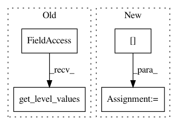

8fe072260ad6d72dbf3efd7e9ff4df12d9173438,aif360/sklearn/tests/test_metrics.py,,,#,10
Before Change
X, y, sample_weight = load_adult(numeric_only=True)
X.insert(2, "race", X.index.get_level_values("race").to_series(index=X.index).map(
lambda r: r == "White").astype("float"))
X.insert(3, "sex", X.index.get_level_values("sex").to_series(index=X.index).map(
{"Male": 1, "Female": 0}).astype("float"))
After Change
X, y, sample_weight = fetch_adult(numeric_only=True)
y = y.factorize(sort=True)[0]
y_pred = LogisticRegression(solver="liblinear").fit(X, y,
sample_weight=sample_weight).predict(X)
priv = X.index.get_level_values("sex")
adult = AdultDataset(instance_weights_name="fnlwgt", categorical_features=[],
In pattern: SUPERPATTERN
Frequency: 3
Non-data size: 4
Instances
Project Name: IBM/AIF360
Commit Name: 8fe072260ad6d72dbf3efd7e9ff4df12d9173438
Time: 2020-02-19
Author: hoffman.sc@gmail.com
File Name: aif360/sklearn/tests/test_metrics.py
Class Name:
Method Name:
Project Name: WZBSocialScienceCenter/tmtoolkit
Commit Name: 9def69a805132ff7549744b5b30a2fa7531fa405
Time: 2019-06-12
Author: markus.konrad@wzb.eu
File Name: tests/test_preprocess.py
Class Name:
Method Name: test_tmpreproc_en_tokens_dataframe
Project Name: dmnfarrell/pandastable
Commit Name: c3631780801e0f981fd8e32fd51e682c67b4339c
Time: 2015-08-27
Author: farrell.damien@gmail.com
File Name: pandastable/headers.py
Class Name: ColumnHeader
Method Name: redraw